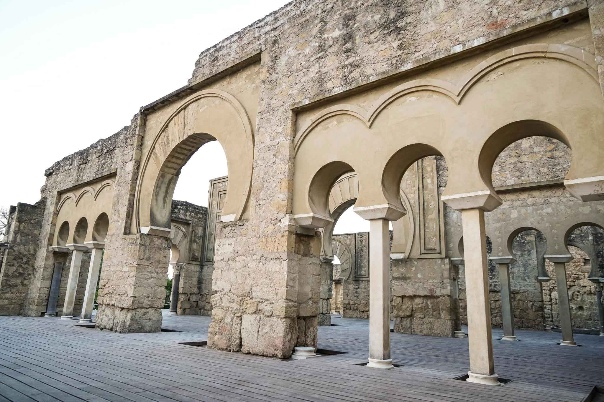

Medina Azahara, la fastuosa y misteriosa ciudad que Abd-al Rahman III mandó construir a los pies de Sierra Morena, a ocho kilómetros de Córdoba capital, encierra, incluso en su nombre, historias legendarias. La tradición popular afirma que, autoproclamado Abd al-Rahman III califa en el 929 d.C., y tras ocho años de reinado, decidió edificar una ciudad palatina en honor a su favorita, Azahara. Sin embargo, recientes estudios aportan fuertes evidencias de la causa que impulsó al califa a fundar Medina Azahara. Una renovada imagen del recién creado Califato Independiente de Occidente, fuerte y poderoso, uno de los mayores reinos medievales de Europa, se acepta como el origen más probable de la nueva Medina
Noticia 2
Se dispone la ciudad en tres terrazas rodeadas por una muralla, situado el Alcázar real en la más superior y la intermedia. La zona más baja se reservó para viviendas y la mezquita, edificada extramuros. Las fuentes históricas apuntan a la participación de unas diez mil personas que trabajaban diariamente en su construcción. Abd al-Rahman no escatimó en materiales para lograr el efecto buscado: la insignia del poderoso reino que gobernaba. Ricos mármoles violáceos y rojos, oro y piedras preciosas, además del cuidado trabajo artesanal de los mejores canteros y las legendarias contribuciones bizatinas, ayudaron al encumbramiento del preciado proyecto.
Noticia 3

Parte del alcázar tenía carácter público y era donde se sucedían las visitas oficiales. En la parte más alta se sitúa el Salón Alto, dispuesto en cinco naves con arcadas. Más abajo se encuentra el Salón Rico. La estancia se divide en tres naves con arcos de mármol rojo y azulado, siendo las laterales ciegas y abierta la central. La decoración de ataurique (motivos vegetales labrados) y la riqueza e los materiales han configurado el nombre del engalanado recinto, completado con baños y abierto al Jardín Alto, de gran hermosura. Se desarrolla este jardín en cuatro zonas, quedando el punto de intersección ocupado por un pabellón y cuatro albercas. Una de éstas, la enfrentada al Salón Rico ha pasado a la leyenda por cobijar en su interior mercurio y bañar el grandioso recinto con destellos de mil colores. Un complejo de calles en rampa empinada nos conducen al gran pórtico oriental, por donde accedían las grandes embajadas que recibía el califa. Delante del mismo se abría una gran plaza en la que se concentraban las tropas y el personal de las ceremonias protocolarias. A extramuros de la medina se emplazó la mezquita, levantada en poco más de un mes. Este solemne recinto sufrió grandes destrozos a través de las sucesivas guerras que asolaron al-Andalus a principios del siglo XI, transformando en ruinas Madinat al-Zahra. El esfuerzo por crear una ciudad ideal tan sólo duró setenta años, efímera vida para la que fuera "favorita" del primer califa.